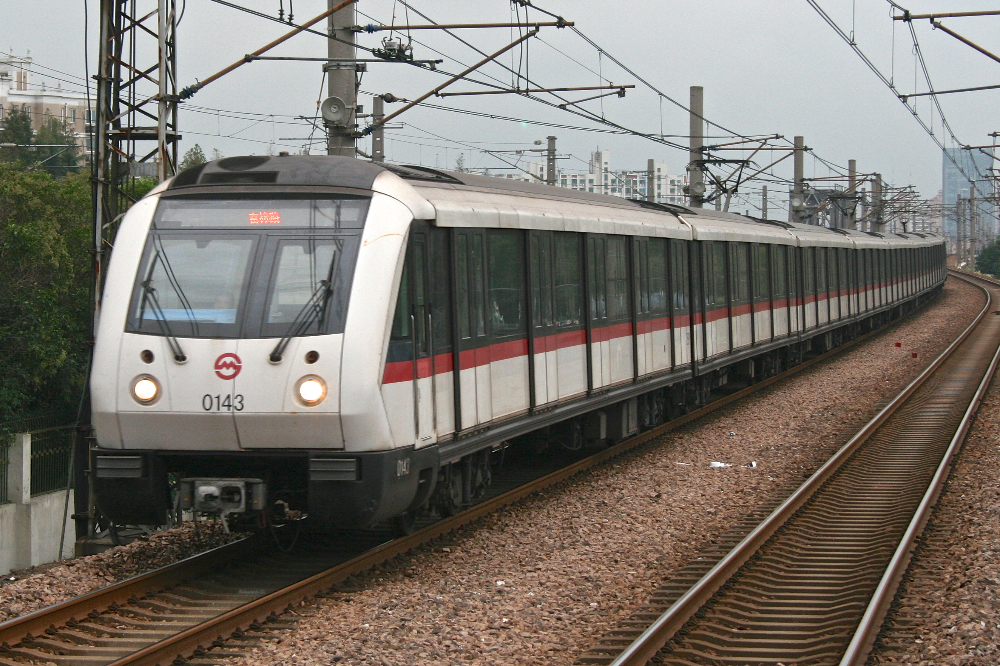
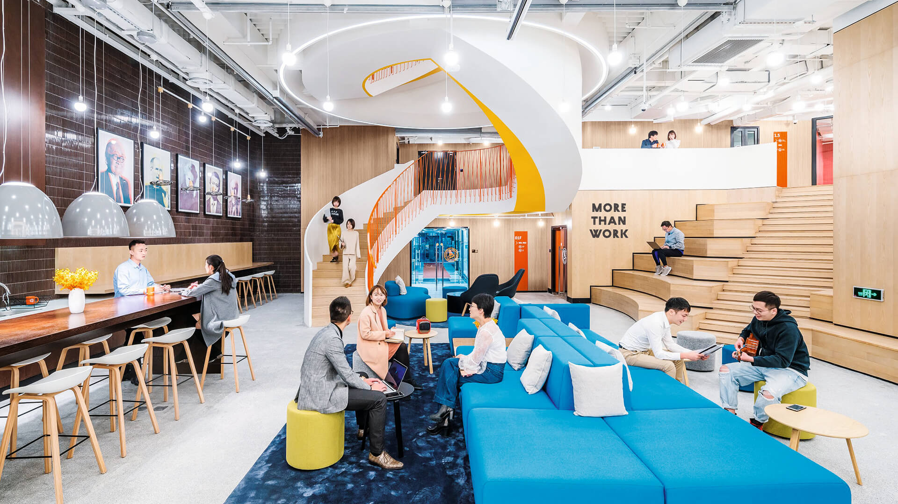

Shanghai
Intro to Shanghai
Shanghai is a global financial hub and one of the most populous cities in the world, known for its modern skyline and deep cultural heritage. The city blends cutting-edge architecture with traditional Chinese elements. The Bund, with its historic colonial buildings, contrasts with the futuristic skyscrapers of Pudong. Shanghai’s dynamic street life, bustling markets, and diverse culinary scene make it a city of contrasts and endless exploration.
What to expect when moving to the city
Average apartment in the City
Average Cost for Rent
- Studio Apartments: CAD 950 to CAD 1,710 per month.
- One-Bedroom Apartments: CAD 1,330 to CAD 2,280 per month.
- Two-Bedroom Apartments: CAD 1,900 to CAD 3,420 per month.
Moving To Shanghai
When moving to Shanghai, you have to keep three things in mind: transportation, education, and employment
- Transportation cost: CAD 0.57 - CAD 1.33 (for a one-way trip on the metro or bus)
- Shanghai is home to some of China's top universities, including Fudan University and Shanghai Jiao Tong University
- As of early 2024, the employment rate in Shanghai remains high, with a strong demand in finance, tech, and manufacturing sectors



Prices of Other Things
| Name | Description | Price |
|---|---|---|
| Education | Average tuition at Fudan University per year | Domestic: CAD 950 - CAD 1,900 International: CAD 4,370 - CAD 14,250 |
| Healthcare | Healthcare in Shanghai is available through public and private options | Public: Covered under social insurance Private: CAD 380 - CAD 2,850 per year |
| Food | The price range for food in Shanghai is diverse | Dining out: CAD 9.50 - CAD 57.00 Groceries for one person: CAD 190 - CAD 475 |
| Phone plan | The price range for a phone plan in Shanghai per month | CAD 9.50 - CAD 38.00+ |
| Gas Prices | Average gas price per liter | CAD 1.43 - CAD 1.62 |